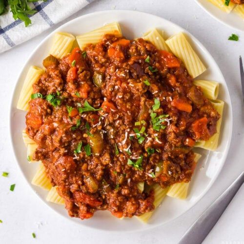

Bolognese sauce

Description
Bolognese sauce is basically a sauce made with ground beef, onions, tomatoes and fresh herbs, and served with pasta. It's an Italian meat sauce that originated from the city of Bologna.
Ingredients
- 2 tablespoons butter
- 1 tablespoon olive oil
- 1 cup finely diced onion
- 1/2 cup finely diced celery
- 1/2 cup finely diced carrot
- 1 pinch salt
- 1 1/2 pounds ground beef
- freshly ground black pepper to taste
- 1 pinch caaayenne pepper
- 1/8 teaspoon ground nutmeg
- 2 cups white wine
- 1 can whole italian plum tomatoes
- 2 cups water
- 1 1/2 cups 2% milk
Steps
- Melt butter with olive oil in a large saucepan over medium heat; cook onion, celery, and carrot with pinch of salt until onion turns translucent, about 5 minutes. Stir ground beef into vegetables and cook, stirring constantly until meat is crumbly and no longer pink, about 5 minutes. Season meat mixture with 1 1/2 teaspoon salt, black pepper, cayenne pepper, and nutmeg.
- Pour milk into ground beef mixture and bring to a simmer. Cook, stirring often, until most of the milk has evaporated and bottom of pan is still slightly saucy, about 5 minutes.
- Raise heat to medium high and pour white wine into ground beef mixture; cook and stir until white wine has mostly evaporated, about 5 more minutes.
- Pour tomatoes with juice into a large mixing bowl and crush them with your fingers until they resemble a slightly chunky sauce. Pour tomatoes into sauce; fill can with 2 cups water and add to sauce. Bring to a simmer.
- Reduce heat to low and simmer, stirring often, until mixture cooks down into a thick sauce, at least 3 hours but preferably 4 to 6 hours. Skim fat from top of sauce if desired. If sauce is too thick or too hot on the bottom, add a little more water. Taste and adjust seasonings before serving.